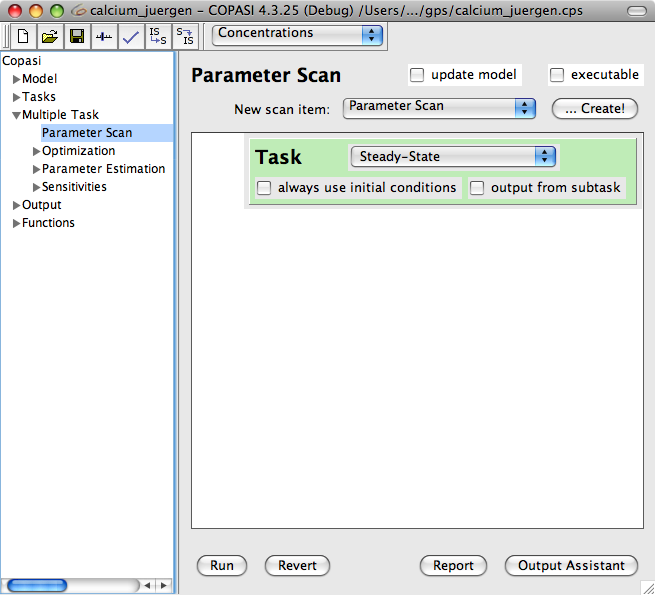
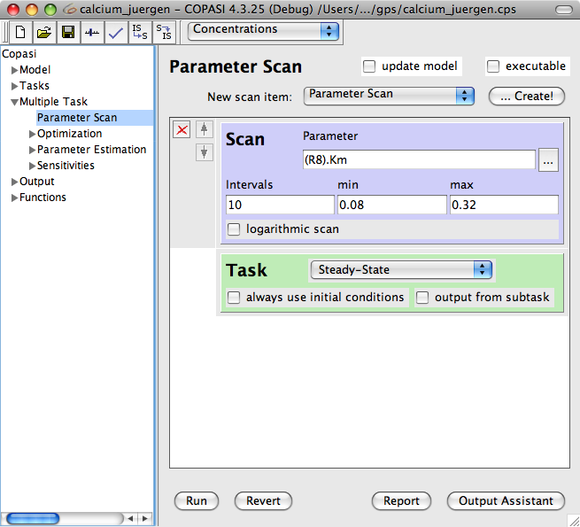
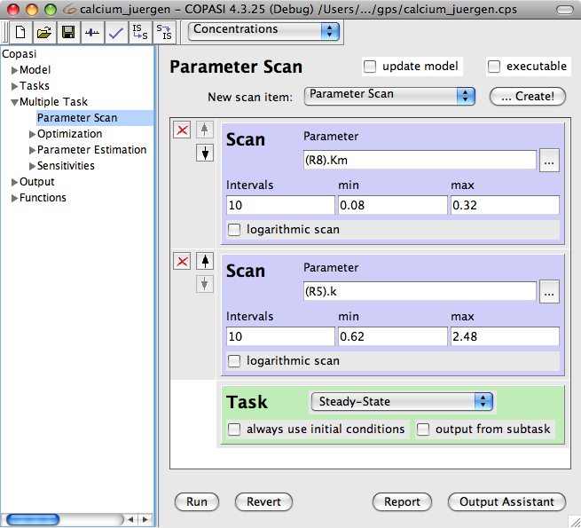
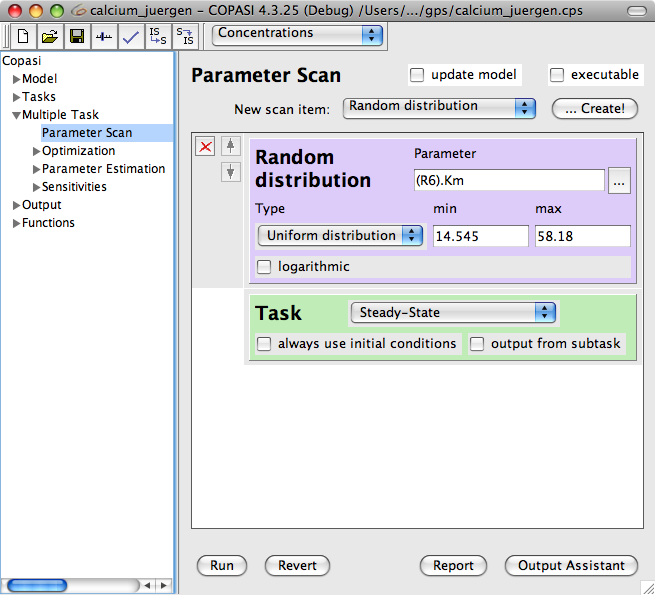
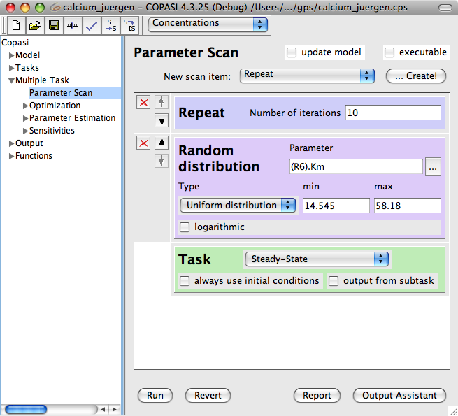
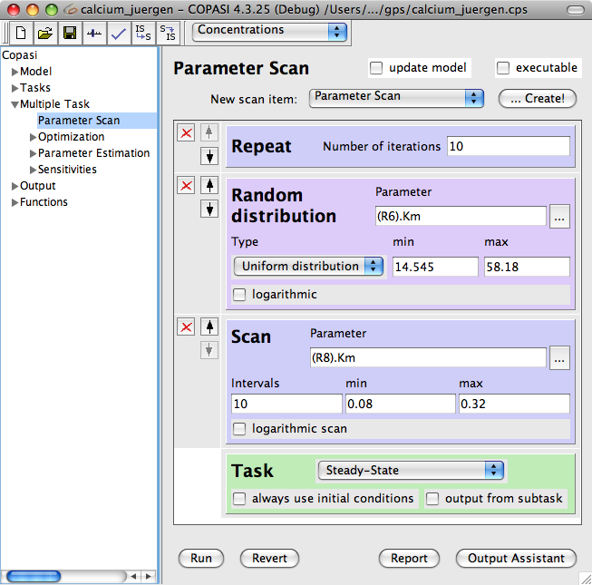
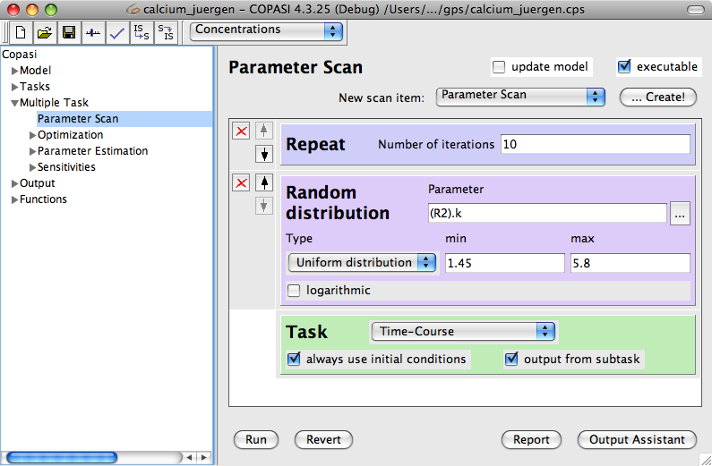
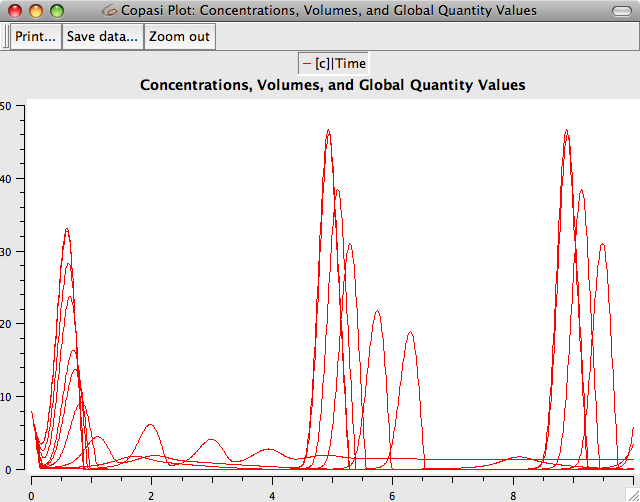
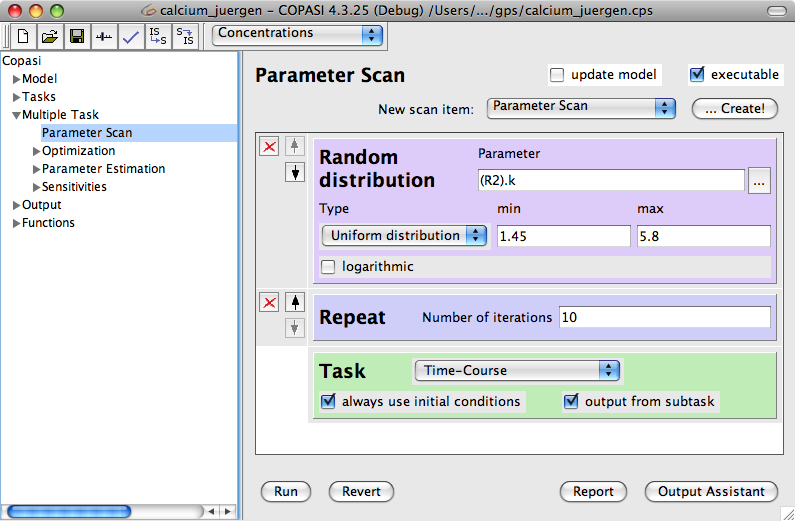
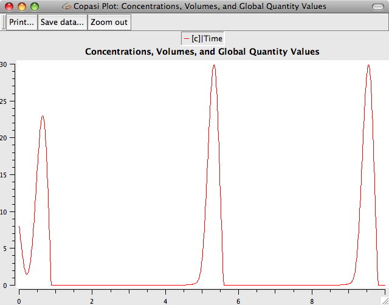

The leaf for Parameter Scan in the object tree is located under Multiple Tasks. At the top, the dialog displays a box called New scan item together with a ... Create! button. When the dialog is opened for the first time, the only item in the widget below is a green box called Task. This widget contains a drop down list with all the tasks that can be used in a scan. Additionally there are a check box called always use initial conditions and a check box called output from subtask.
|  |
| Empty Scan Task Dialog |
The tasks for which scans can be conducted are
Steady-State,
Time Course,
Metabolic Control Analysis, and
Lyapunov Exponents. So if you want to do a scan for a time course calculation, you should choose
Time Course from the drop down list in the Task widget. We will ignore the two check boxes for the time being and take a look at the drop down list at the top of the Scan Task dialog. This drop down list contains three entries named
Parameter Scan,
Repeat and
Random distribution. Those are additional elements that can be added to the main widget below to form complex tasks.
Let us look at one after the other and start with the
Parameter Scan. As it is right now, the scan task does not do anything since we have not told it yet which parameter we want to scan. To define a parameter for the scan, you choose
Parameter Scan from the drop down list at the top and press the ... Create! button. COPASI will add a new widget to the dialog that is called Scan. The Scan widget contains some empty line edit fields and a button beside the line edit labeled Parameter and a check box labeled logarithmic scan.
|  |
| Scan Task Dialog with Scan Item |
The first thing you have to do is to select the parameter for the scan. You do this by clicking on the ... button and selecting a parameter from the selection dialog that appears. Once you are finished with your selection and pressed the OK button, the name of the object you chose will appear in the line edit field beside the ... button. In the line edit fields below you can now specify the minimal value the parameter will have during the scan as well as the maximal value. After choosing the object, these values will be set to half the objects value for the minimum and double the objects value for the maximum. In the Intervals, you can specify how many intervals COPASI uses during the scan to raise the value from minimum to maximum. Last but not least, the logarithmic check box determines whether the value is raised in linear steps if the box is unchecked or in logarithmic steps if the box is checked. Now you are set to run your first simple scan by clicking on the Run at the bottom of the dialog. In order to actually see some result, you have to have some kind of output defined. The scan task can generate reports and, if a plot is defined, the scan task will do plotting while running the scan. If you did not change the number of intervals from the default, the scan task will run 10 time course simulations each with a different value for the chosen parameter and in turn you will see 10 plots overlaid in one plot window.
If you want to have output from the parameter scan, you have to create an output definition as described in the
output section. The easiest way is probably to use the output assistant which you activate via the Output Assistant button. This is described in the
output assistant section. All that is left to do in order to write the output to a specific file is to connect an output definition with a file. This can be achieved by clicking on the Report button. This opens a dialog that lets you connect the report of a specific task to a file on your hard disk. First we choose a report that is suitable for the parameter scan task from the drop down list at the top of the dialog. Next, we specify a file that will be used to store the report by clicking on the browse button and selecting the destination in the file dialog that opens. Per default, COPASI creates a new file or overwrites an existing file with the same name. Alternatively, you can tell COPASI to append the report to the end of an existing file by selecting the corresponding check box labeled Append at the bottom of the dialog. Once you are finished, you click on the Confirm button. If you now run the task, COPASI will write the output to the file you specified.
So far we have only scratched the surface of the scan dialog. E.g. if you want to do a two-dimensional scan, i.e. a scan where two parameters are independently scanned, you can add a second Scan widget by adding it to the main dialog just like you did for the first parameter. You select
Parameter Scan in the drop down list and push the ... Create! button.
|  |
| Scan Task Dialog with 2 Scan Items |
|  |
| Scan Task Dialog with Random Distribution Scan Item |
After adjusting the minimum and maximum as well as the number of intervals, you can run the scan task again. COPASI will now do a scan for the first parameter while holding the second parameter constant at the minimum. Next, COPASI will raise the second parameter and do another scan from minimum to maximum for the first parameter. This way a full scan for the first parameter is done for every value of the second parameter. You have to be careful because assuming that you chose 10 intervals for both parameters, COPASI will run 100 time course simulations during this two-dimensional scan which can take a long time.
The
Random distribution item is similar to the
Parameter Scan item. With the random distribution, a parameter can be given a random value. After adding a Random distribution widget to the main dialog, you first have to choose a parameter for which a random value will be set. You can then choose from three distribution types to generate the random value. The three distributions are
Uniform distribution,
Normal distribution and
Poisson distribution. Additionally, you have to set the bounds within which the random value will be set (uniform distribution) or the mean and average values (normal distribution) or just the mean value (Poisson distribution). If all has been set and you press the Run, COPASI will set the parameter value to a random value from the chosen distribution and run one time course simulation.
The
Repeat item can be used to repeat a certain action several times. For example, if you add a Repeat widget above a Random distribution one, the parameter will be given a random value as many times as specified in the Repeat widget and time course simulation, or one of the other tasks specified in the Task one at the bottom of the main widget, is run with this value.
|  |
| Scan Task Dialog with Random Distribution and Repeat Scan Items |
Different items can be combined in many ways to achieve certain goals. For instance, you could run 10 parameter scans for a certain value, each with a different random value for another parameter, by combining a Scan widget with a Random distribution and a Repeat ones.
With the buttons on the left of each item, except the Task at the bottom, you can move the items up or down in the list or close an item you no longer need. The order of the items in the main widgets determines in which order COPASI will handle the actions. A widget is controlled by the widget above it. Thus, it can be rather important, if a Repeat acts on the widget directly below it.
Consider you have added a Repeat widget and a Random distribution one to the main widget. Now the Repeat widget can be either above the Random distribution widget or below it, and the results you get after pushing the Run button are very different.
Lets first look at the case where the Repeat widget is above the Random distribution widget. If you push the Run button, COPASI will run the task as many times as you have specified in the Repeat widget, each time with a different random value for the parameter you have chosen in the Random distribution widget. Now lets assume the Repeat is below the Random distribution. If you push the Run button now, COPASI will also run the task as many times as you specified in the Repeat widget. The difference is that this time, the parameter value gets a random value before the repeat takes effect, i.e. all runs are done with the same random value for the chosen parameter. If you do this for a deterministic time course simulation and a concentration plot is defined, the difference becomes obvious because in the first case, you will probably get X different curves, whereas in the second case you may get X times the same curve.
|  |
| Scan Task Dialog with Combination of Actions |
|  |
| Scan Task Dialog with repeated Random Distribution |
|  |
| Plot with 10 different Curves |
|  |
| Scan task Dialog with with Random Distribution where Time Course Task is repeated |
|  |
| Plot with 10 identical Curves |
What we have left out so far are the two check boxes at the bottom of the Task widget. The first check box is labeled always use initial conditions. If this check box is checked, each task that is run runs with the same initial conditions. If the check box is not checked, only the first task that runs uses the initial conditions from the model, each subsequent task uses the conditions as they are after the preceding task has finished.
The second check box is labeled output from subtask. If it is checked, COPASI will plot or write the complete time series result each time a time series task runs. Correspondingly it will output intermediate results for the other tasks. So if during your scan, 10 time series are calculated, all ten are overloaded in the same window. If the check box is unchecked, COPASI will only plot the end result, i.e. the concentrations after the last step, of each time series. This applies to reports correspondingly. This feature is useful if you want to plot some calculation results as a function of the parameter that is scanned. So e.g. you could plot the end result of a Steady-State calculation on the y-Axis versus a kinetic parameter on the x-Axis.